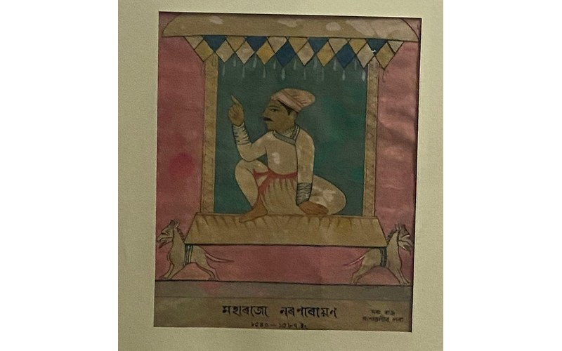
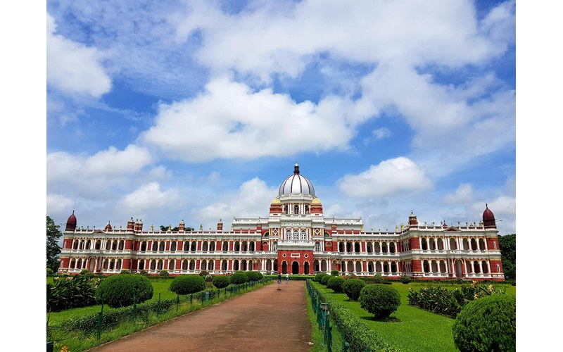
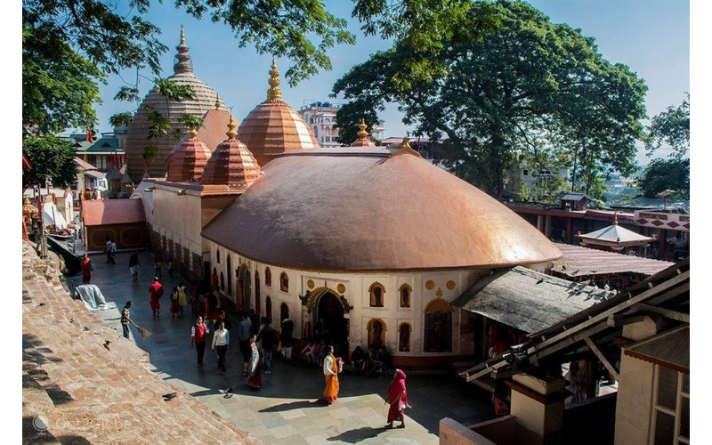
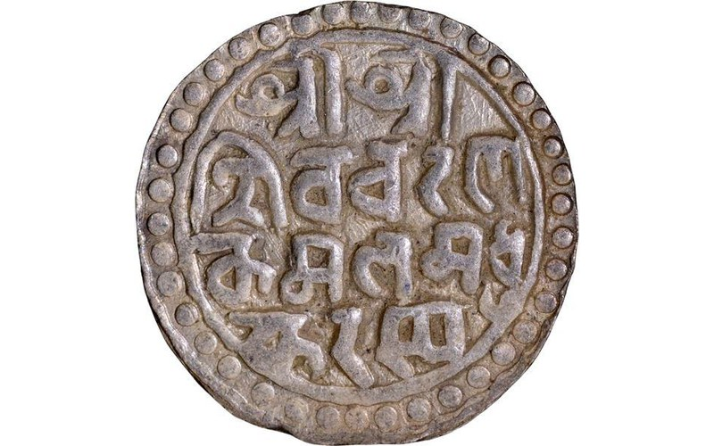

Biswa Singha
Founder & ConsolidatorBiswa Singha is regarded as the founder of the Koch royal dynasty. He consolidated several local political forces and established the foundation of Koch rule.
Journey into the history of the Koch Dynasty, a powerful early-modern kingdom that shaped the political and cultural landscape of Assam, North Bengal and neighbouring regions.
The Koch Dynasty emerged in the Kamata region during the sixteenth century. Biswa Singha consolidated Koch power and established a strong political base in the region.
The kingdom reached its political and military height under Nara Narayan, whose brother Sukladhwaj, popularly known as Chilarai, served as a celebrated military commander.
At its height, Koch influence extended across large parts of present-day Assam and North Bengal and interacted with neighbouring kingdoms including the Ahoms, Kacharis and Tripura.
Follow the major political developments that shaped the Koch kingdom and its successor states.
Biswa Singha consolidated Koch power in the Kamata region and laid the foundation for the Koch royal state.
Nara Narayan presided over the kingdom during its major period of political expansion and cultural development.
Chilarai led Koch military campaigns across neighbouring territories and helped expand Koch influence throughout the Brahmaputra Valley and adjoining regions.
Nara Narayan introduced silver coinage known as the Narayani, which became an important currency tradition in the region.
Following Nara Narayan's death, the Koch political sphere divided into major branches including Koch Bihar and Koch Hajo.
Koch Bihar continued as a princely state. Later rulers supported architectural, educational and cultural developments.
Meet some of the personalities who shaped Koch political and military history.
Biswa Singha is regarded as the founder of the Koch royal dynasty. He consolidated several local political forces and established the foundation of Koch rule.
Nara Narayan ruled during the Koch kingdom's major period of expansion and cultural development. He is also associated with the introduction of Narayani coinage.
Sukladhwaj, better known as Chilarai, was the brother of Nara Narayan and the kingdom's celebrated military commander.
Maharaja Nripendra Narayan was a later ruler of Koch Bihar. His reign is associated with modern architectural and institutional developments.
The Koch legacy can be seen through administration, coinage, architecture, religion and regional cultural exchange.
Silver Narayani coins associated with Nara Narayan became an important part of the monetary history of Assam and North Bengal.
Koch rulers supported religious institutions and temples. Historical records associate Nara Narayan and Chilarai with patronage connected to Kamakhya.
Koch expansion influenced political relations among Assam, North Bengal and neighbouring kingdoms.
The Koch court became an important environment for religious, literary and artistic activity in the region.
The political division of the Koch realm shaped later regional identities and political boundaries in Assam and North Bengal.
Later Koch Bihar rulers left important architectural landmarks, including the Cooch Behar Palace.
Explore visual material connected with the Koch dynasty and its later architectural legacy.



